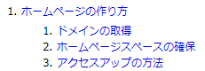
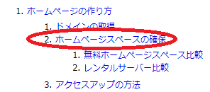
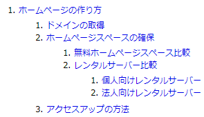

<section>はアウトラインを明示するタグ
HTML5の<section>タグを使うことで、ひとまとまりのコンテンツをひとつの領域として区分けすることができます。
この「section（セクション）」は「区画、区分」を表す言葉ですが、それぞれの「見出しと文章」をひとつのセットとして区分けすることにより、文章構造の概要（アウトライン）を明確に示すことができます。
以前までのXHTML1.0でも、見出し要素の「h1～h6タグ」で暗黙的に文章のアウトラインを示すことができましたが、HTML5での<section>タグを使用することにより、はっきりと明示することができます。
「h1～h6タグ」による暗黙的なアウトライン
上記の以前までの「h1～h6タグ」による暗黙的なアウトラインというのは、例えば、以下のようなコンテンツがあったとします。
<h1>ホームページの作り方</h1>
<h2>ドメインの取得</h2>
<h2>ホームページスペースの確保</h2>
<h3>無料ホームページスペース比較</h3>
<h3>レンタルサーバー比較<h3>
<h4>個人向けレンタルサーバー</h4>
<h4>法人向けレンタルサーバー</h4>
<h2>アクセスアップの方法</h2>
このうち、<h2>タグだけを抜き出して文章の構造を解釈すれば、以下のようになります。

この状態で、<h2>タグの「ホームページスペースの確保」の箇所に、より詳細なコンテンツを追加する場合、<h3>タグを使うことで以下のように文章が階層化していきます。

さらにコンテンツを階層化する場合、<h4>を使えばこのようになります。

つまり、文章のまとまりとしては、<h4>の「個人向けレンタルサーバー」や「法人向けレンタルサーバー」は、<h3>の「レンタルサーバー比較」の内容としてひとつのまとまったコンテンツを形成していることになります。
さらに、<h3>の「レンタルサーバー比較」や「無料ホームページスペース比較」は、<h2>の「ホームページスペースの確保」の内容としてひとつのまとまりを形成しています。
ChromeアドオンのHTML5 Outlinerなどを使えば、上記のように閲覧しているサイトのアウトラインを簡単にチェックすることができます。
このように、文章のまとまりがそれぞれはっきりと明示されているわけではないものの、「h1～h6タグ」の使い方を解釈することにより、暗黙的には文章の構造を判断することができます。
けれども、HTML5の<section>要素を使えば、暗黙的ではなく、明確に文章のアウトラインを示すことができます。
<section>は「見出しタグ」とセットで使用する
この「section（セクション）」は「区画、区分」を表す言葉ですが、<section>タグは「見出しと文章」をひとつのセットとして使用します。
上記の例でいえば、以下のように使います。
<section>
<h1>ホームページの作り方</h1>
┣ <section>
┃ <h2>ドメインの取得</h2>
┃ <p>文章あれこれ</p>
┣ </section>
┣ <section>
┃ <h2>ホームページスペースの確保</h2>
┃ <p>文章あれこれ</p>
┃ ┣ <section>
┃ ┃ <h3>無料ホームページスペース比較</h3>
┃ ┃ <p>文章あれこれ</p>
┃ ┣ </section>
┃ ┣ <section>
┃ ┃ <h3>レンタルサーバー比較</h3>
┃ ┃ <p>文章あれこれ</p>
┃ ┃ ┣ <section>
┃ ┃ ┃ <h4>個人向けレンタルサーバー</h4>
┃ ┃ ┃ <p>文章あれこれ</p>
┃ ┃ ┣ </section>
┃ ┃ ┣ <section>
┃ ┃ ┃ <h4>法人向けレンタルサーバー</h4>
┃ ┃ ┃ <p>文章あれこれ</p>
┃ ┃ ┗ </section>
┃ ┗ </section>
┣ </section>
┣ <section>
┃ <h2>アクセスアップの方法</h2>
┃ <p>文章あれこれ</p>
┗ </section>
</section>
ただし、この例では便宜上記載しましたが、一番外側の<section>については<body>や<article>自体もセクションを作るため、たいていは二重になるため必要ありません。
例えば、以下のように書くと<body>タグのセクションの見出しがなくなってしまいます。
<body>
<section>
<h1>
<section>
つまり、<body>自体もセクションを生成するため、大雑把に言えば、以下のように<section>が二重になってしまいます。
<section>
<section>
<h1>
<section>
そのため、 一番外側は<section>で囲む必要はありません。
<body>
<h1>
<section>
このように<section>を使用することで、暗黙的ではなく、明確に意図的にアウトラインを生成することができます。ただし、h1、h2、h3など使用する場合と同じ結果になりますので、特に使用する必要性はないのかもしれません。